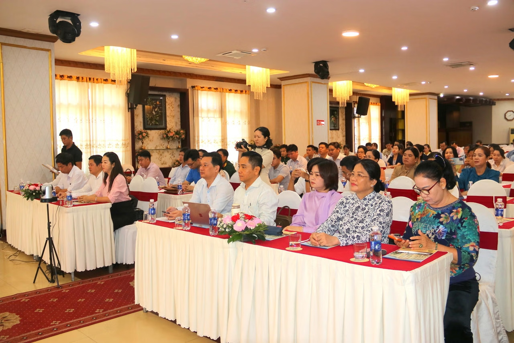

Cuộc thi trực tuyến “Tìm hiểu pháp luật năm 2026”
Cần Thơ: Lan tỏa tinh thần chủ động tìm hiểu pháp luật
Cuộc thi trực tuyến “Tìm hiểu pháp luật năm 2026” đợt 2 tại TP Cần Thơ
đã thu hút hơn 53.000 người tham gia với hơn 421.000 lượt dự thi. Điều
này cho thấy hiệu quả của việc ứng dụng công nghệ thông tin, chuyển
đổi số trong công tác phổ biến, giáo dục pháp luật (PBGDPL), đồng thời
đặt ra yêu cầu đổi mới mạnh mẽ hơn nữa để đưa pháp luật đến gần dân.
Hơn 421.000 lượt người tham gia dự thi
Cuộc thi góp phần nâng cao hiểu biết pháp luật, tạo chuyển biến về
nhận thức và ý thức chấp hành pháp luật của cán bộ, công chức, viên chức
và Nhân dân trên địa bàn thành phố. Đồng thời, tăng cường sự quan tâm, chỉ
đạo của các cấp ủy Đảng, chính quyền; phát huy sự phối hợp giữa các cơ
quan, ban, ngành, đoàn thể trong công tác tuyên truyền, phổ biến, giáo
dục pháp luật.

Ông Nguyễn Tương Lai - Trưởng Phòng Phổ biến, theo dõi thi hành pháp
luật và Quản lý xử lý vi phạm hành chính (Sở Tư pháp TP Cần Thơ) cho biết,
để bảo đảm chất lượng nội dung, Ban Tổ chức đã chỉ đạo xây dựng hơn
800 câu hỏi và đáp án liên quan đến nhiều lĩnh vực pháp luật quan trọng,
thiết thực với đời sống xã hội. Nội dung bộ câu hỏi tập trung vào các quy
định pháp luật mới, trong đó có các luật về lý lịch tư pháp, an ninh
mạng, phòng, chống ma túy, viên chức, thuế thu nhập cá nhân, tiết kiệm, chống
lãng phí, báo chí, xây dựng, dân số, phòng bệnh, phòng, chống tham nhũng
, tiếp công dân, khiếu nại và tố cáo.
Theo đó, cuộc thi đợt 2 đã thu hút hơn 53.000 người tham gia với hơn
421.000 lượt, tăng gần 100.000 lượt tham gia so với đợt 1. Những con số
này cho thấy mức độ quan tâm và sự chủ động tìm hiểu pháp luật của người
tham gia. Đồng thời, nhiều người đã dự thi nhiều lần để nâng cao kết quả
và kiến thức pháp luật. Đáng chú ý, lực lượng trẻ là nhóm tham gia đông đảo
nhất. Người dưới 18 tuổi, chiếm 48,01%; nhóm từ 18 đến 30 tuổi chiếm
12,47%. Xét theo đối tượng, học sinh, sinh viên chiếm tỷ lệ cao nhất, tương
đương 55%.

Nhiều cơ quan, đơn vị, trường học và địa phương
đã tích cực hưởng ứng Cuộc thi như: Trường THPT An Khánh, Công an TP Cần
Thơ, Trường THPT Bùi Hữu Nghĩa. Một số địa phương cũng có số lượng người
tham gia và lượt dự thi đáng chú ý như: UBND phường Ngã Năm, UBND phường Ngã
Bảy cùng nhiều cơ quan, đơn vị khác.
Theo ông Lai, kết quả trên cho thấy cuộc thi đã có sức lan tỏa đến nhiều
nhóm đối tượng trong xã hội, đặc biệt là thế hệ trẻ. Đây cũng là lực lượng
có điều kiện tiếp cận nhanh với công nghệ thông tin, các nền tảng số và hình
thức học tập trực tuyến.
Đưa pháp luật đến gần hơn với người dân trên môi trường số
Một trong những điểm nổi bật của cuộc thi là việc tận dụng môi trường
Internet và nền tảng trực tuyến để đổi mới phương thức PBGDPL. Phần mềm cuộc
thi có giao diện đơn giản, thuận tiện, hỗ trợ nhiều thiết bị có kết nối Internet,
tạo điều kiện để người dân có thể tham gia mọi lúc, mọi nơi và nhiều lần.
Qua đó, góp phần nâng cao hiệu quả công tác PBGDPL trong bối cảnh chuyển
đổi số đang diễn ra mạnh mẽ.


Cuộc thi không chỉ là một sân chơi tìm hiểu kiến thức mà còn được đánh
giá là một đợt sinh hoạt chính trị, pháp lý sâu rộng, thu hút sự tham gia
của nhiều nhóm đối tượng, từ học sinh, sinh viên, giáo viên, cán bộ, công
chức, viên chức, lực lượng vũ trang đến người lao động và Nhân dân.
Tuy nhiên, bên cạnh những kết quả tích cực, Ban Tổ chức cũng thẳng
thắn chỉ ra một số hạn chế. Theo đó, trong thời gian tới, Ban Tổ chức xác
định sẽ tiếp tục nâng cấp phần mềm, tối ưu hóa tiện ích, xây dựng bộ câu hỏi
với nhiều mức độ phù hợp với từng nhóm đối tượng là yêu cầu quan trọng trong
thời gian tới. Các câu hỏi cũng sẽ được nghiên cứu theo hướng đa dạng hơn,
tăng cường những tình huống pháp luật bằng hình ảnh, lựa chọn phương án xử
lý tình huống để người tham gia không chỉ ghi nhớ quy định mà còn nâng cao
khả năng vận dụng pháp luật trong thực tế. Nội dung các Cuộc thi cần tiếp tục
bám sát nhu cầu của người dân, doanh nghiệp và yêu cầu quản lý nhà nước, tập
trung vào những chính sách, quy định liên quan trực tiếp đến quyền và lợi ích
hợp pháp của người dân, hoạt động sản xuất, kinh doanh.

Đánh giá về công tác PBGDPL, ông Hồ Minh Hải - Phó Giám đốc Sở
Tư pháp TP Cần Thơ nhấn mạnh yêu cầu đổi mới nội dung, đa dạng hóa hình
thức tuyên truyền, chú trọng phổ biến các quy định pháp luật gắn trực tiếp
với đời sống, quyền và nghĩa vụ của người dân cũng như hoạt động của doanh
nghiệp. Cùng với đó là đẩy mạnh ứng dụng công nghệ thông tin, chuyển đổi số
nhằm nâng cao khả năng tiếp cận pháp luật của người dân.

Theo ông Hải, công tác PBGDPL cần được gắn với cải cách hành chính,
nâng cao hiệu lực, hiệu quả quản lý nhà nước và trách nhiệm thi hành công vụ.
Mỗi cán bộ, công chức, viên chức phải gương mẫu chấp hành Hiến pháp và pháp
luật, thực hiện nghiêm kỷ luật, kỷ cương hành chính, góp phần xây dựng chính
quyền phục vụ Nhân dân. Sở Tư pháp sẽ tiếp tục phát huy vai trò tham mưu, tăng
cường phối hợp với các cơ quan, đơn vị, địa phương để nâng cao chất lượng công
tác phổ biến, giáo dục pháp luật và các cuộc thi tìm hiểu pháp luật; đồng thời
kịp thời biểu dương, nhân rộng những mô hình hay, cách làm hiệu quả. “Mục tiêu
quan trọng là từng bước hình thành thói quen chủ động tìm hiểu và tự giác chấp
hành pháp luật trong Nhân dân, đưa pháp luật đến gần hơn với người dân, góp phần
nâng cao hiệu quả tổ chức thi hành pháp luật trên địa bàn thành phố”, ông Hải
nhấn mạnh.
Quan trọng hơn, từ một cuộc thi, việc tìm hiểu pháp luật đang được định hướng
trở thành hoạt động thường xuyên, góp phần xây dựng ý thức tôn trọng, chấp hành
pháp luật và từng bước hình thành văn hóa pháp lý trong cán bộ, công chức và
Nhân dân TP Cần Thơ.